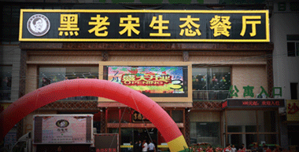

原料基地
品质保证，从源头做起。为了从源头上保证品质可控，中航德天成在全国9个省市三十几个城市建立起自己的原料供应基地。实现了耕者和食者的双赢。
品质保证，从源头做起。为了从源头上保证品质可控，中航德天成在全国9个省市三十几个城市建立起自己的原料供应基地。实现了耕者和食者的双赢。
许昌产业园基地
夏津产业园
天津活力源
八五二黑豆种植基地
公司携手中国宇航食品产业联盟、全国农产品加工产业发展联盟杂粮深加工专业委员会等，建立顶尖级专家人才智库，用科技力量促进农产品深加工产业与健康产业完美融合。
蒋兴村
曲建伟
白树民
周亮忠
毛宏伟
杨昌林
尤春英
黑老宋生态连锁餐厅是德世久集团对于解决“三农问题”的一次伟大尝试，也是一个惠及广大农民，发展农业经济，改善农村产业结构的一种创新方案，将农民手中滞销的有机蔬菜进行统一收购，逐层筛选，严格把关，消毒包装后通过德世久集团庞大的物流系统，运输到每一家黑老宋生态连锁餐厅，让城里人吃到放心菜的同时，鼓起了农村人的腰包，在解决城市有机菜品种类单一，数量不足的市场需求的同时，解决了困扰许多地方多年的农业产业结构改革问题。
北京德世家商务酒店管理有限公司是德世久集团旗下子公司之一
酒店以“慈心济世，惠德厚身”为企业宗旨，传承“先天道一”之文化精髓，以投资顶尖美食、豪华品质、生态养生连锁酒店为主，生态产品植入的全新经营模式。开拓酒店行业新的旗帜和标杆!集团目前正以积极、稳健的态势介入国内、国际酒店行业，以“投资发展国内、国际中高端精品连锁酒店、打造世界级生态养生连锁酒店业创新型品牌”作为公司未来五年发展的环球化战略布局。
2016年，德世家酒店乘风起航，未来发展市场目标为三年到五内以千家自主品牌连锁酒店辐射全国所有省份、直辖市、100余个国内大中城市市场，并同时开拓国外市场，最终以全新的核心业务品牌成为世界级连锁酒店航母。